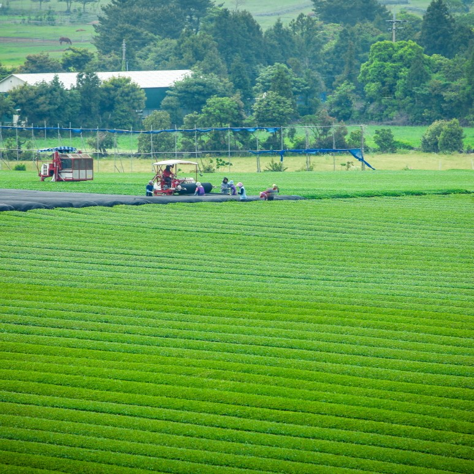

제주의 풍경
제주지도
축제와 행사
표선면

사진 출처
[제주허브동산] http://www.herbdongsan.com/page.php?p=1_1
[제주민속촌] https://www.visitjeju.net/kr/detail/view?contentsid=CONT_000000000500626#
[표선해수욕장] https://www.visitjeju.net/kr/detail/view?contentsid=CNTS_000000000001196#
[성읍녹차마을] https://www.visitjeju.net/kr/detail/view?contentsid=CNTS_000000000020288#